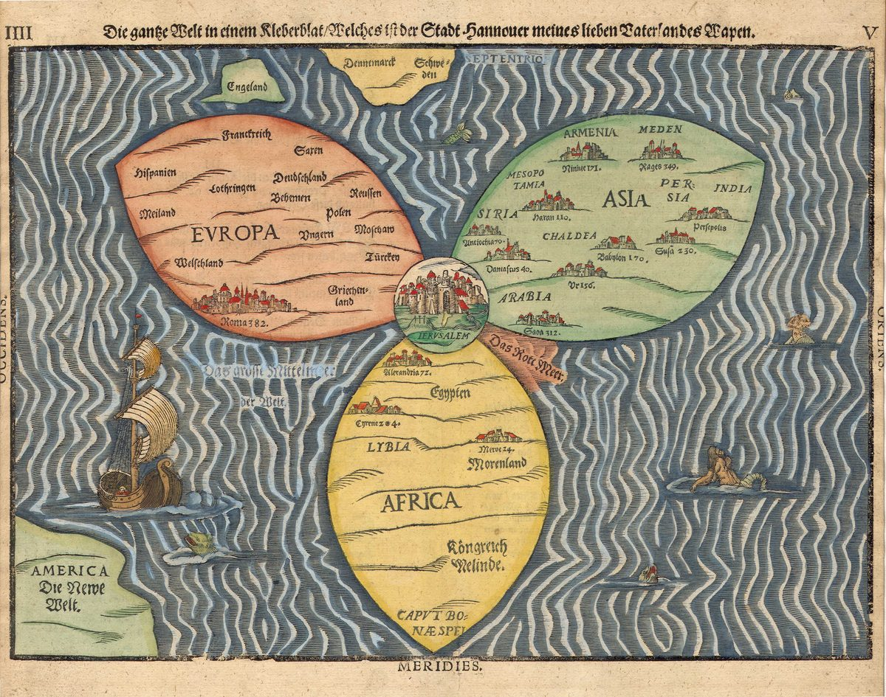

Ezequiel 5 — La Traducción Mister

No está tomado de Ezequiel. El mapa pone a Jerusalén en el centro de los continentes, lo que pinta las palabras de Ezequiel 5:5, «la he puesto en medio de las naciones». El versículo lo dice de su lugar entre las naciones que la rodean.

Notas del traductor
⭐ Un sacerdote se afeita. Ha de tomar una espada y usarla como navaja de barbero en la cabeza y la barba; «navaja de barbero» (ta’ar haggallavim) está en este único versículo (ta’ar). Para un sacerdote es lo que la ley prohíbe: los sacerdotes no han de hacerse calvas en la cabeza ni afeitar los bordes de la barba (Levítico 21:5, ya en estas páginas), regla dada a todo Israel en Levítico 19:27, y la cabeza del nazareo no la ha de tocar navaja (Números 6:5, ambos ya en estas páginas). Isaías ya había pintado a Jehová afeitando con una navaja alquilada de más allá del Río, el rey de Asiria (Isaías 7:20, ya en estas páginas). La RV60 tiene «tómate un cuchillo agudo», la NVI «toma ahora una espada afilada» y la TNM 2019 «toma para ti una espada afilada».
⭐ Tres tercios. Un tercio se quema en medio de la ciudad, otro se hiere con la espada alrededor, y otro se esparce al viento, con una espada desenvainada tras él. «Desenvainaré [la espada] tras ellos» está en tres versículos de la Biblia hebrea: los versículos 2 y 12 de aquí, y Ezequiel 12:14. El mismo verbo está en la advertencia del pacto de Levítico 26:33 (ya en estas páginas), donde Jehová dice que los esparcirá entre las naciones y desenvainará la espada tras ellos.
⚠ Unos pocos en las faldas. Un número pequeño se ata en el pliegue del manto, el kanaf (kanaf). «En tus faldas» está en dos versículos de la Biblia hebrea: aquí y Jeremías 2:34 (ya en estas páginas). No es una promesa de que todos estén a salvo: el versículo 4 toma también de estos y los echa al fuego, y de él sale fuego a toda la casa de Israel. La RV60 tiene «los atarás en la falda de tu manto», la NVI «átalos al borde de tu manto» y la TNM 2019 «envuélvelos en los pliegues de tu ropa».
⭐ Esta es Jerusalén. La señal se explica enseguida: el ladrillo, el cabello, la ciudad son uno. «La he puesto en medio de las naciones» está en este único versículo. Su lugar entre ellas es la medida de lo que sigue, porque el versículo 6 dice que ha hecho maldad más que las naciones que la rodean. La RV60 tiene «la puse en medio de las naciones» y la NVI «Yo la coloqué en medio de las naciones».
⭐ Turbulentos. La palabra del versículo 7 (hamonkhem) está en este único versículo, y el estante se divide: la RV60 tiene «Por haberos multiplicado», la NVI «Ustedes han sido más rebeldes que las naciones», la TNM 1987 «fueron más turbulentos» y la TNM 2019 «causaron más problemas».
⚠ El «no». El hebreo termina el versículo 7 con lo asitem, «no han hecho», dicho de los juicios de las naciones que los rodean: no hicieron los de Jehová ni hicieron tampoco los otros. La oración del versículo 7 vuelve en Ezequiel 11:12 sin el «no»: allí han hecho según los juicios de las naciones. El estante sigue el hebreo de este versículo en parte: la NVI tiene «ni siquiera se han sujetado a las costumbres de esas naciones» y la RV60 «Ni aun según las leyes de las naciones que están alrededor de vosotros habéis andado», mientras que la TNM 2019 tiene «actuaron según las decisiones judiciales de las naciones de alrededor». Esta traducción mantiene lo que dice este versículo (mishpat).
⭐ «Mira, yo estoy contra ti.» Las mismas palabras se dicen después de Tiro, de Sidón y de Faraón (Ezequiel 26:3, 28:22 y 29:3), y de Gog con otra preposición (38:3). Aquí se le dicen a Jerusalén.
⭐ Hechos a ellos. El versículo 7 dice que no hicieron (asah) sus juicios (mishpatim); el versículo 8 dice que él hará (asah) juicios en medio de ellos. Las mismas dos palabras pasan del deber del pueblo al acto de Jehová. La RV60 tiene «haré juicios en medio de ti» y la NVI «te voy a castigar». Los versículos 10 y 15 usan el sustantivo más corto shefatim, «actos de juicio».
⚠ Padres e hijos. La maldición del sitio es la que Levítico 26:29 y Deuteronomio 28:53 (ambos ya en estas páginas) habían nombrado, padres que comen a sus hijos; Jeremías la dice también (Jeremías 19:9), y Lamentaciones la relata (4:10, ya en estas páginas). La segunda mitad aquí es nueva: «los hijos comerán a sus padres» está en este único versículo. La RV60 tiene «los padres comerán a los hijos en medio de ti, y los hijos comerán a sus padres».
⭐ «Vivo yo.» Un juramento, con la razón dada: el santuario contaminado con cosas detestables y abominaciones (shiqquts, toevah). «Mi ojo no perdonará» está en cinco versículos de la Biblia hebrea, todos en Ezequiel: 5:11, 7:4, 7:9 y 8:18 (ya en estas páginas), y 9:10. Deuteronomio da el mismo rechazo como regla de juez: tu ojo no perdonará (Deuteronomio 19:21, ya en estas páginas).
⚠ Disminuir, o afeitar. El verbo es gara, «disminuir, recortar»: la RV60 tiene «te quebrantaré yo también», la TNM 1987 «ciertamente te disminuirá», la NVI «yo mismo los destruiré» y la NIV, en inglés, «I myself will shave you». La NIV oye la navaja del versículo 1; la misma raíz se usa de una barba cortada en Isaías 15:2.
⭐ Los tercios, dichos. Ahora se explica el cabello: un tercio por pestilencia y hambre, un tercio por la espada, un tercio esparcido con la espada detrás. Luego se acaba la ira, y un verbo en medio del versículo 13 se ha leído de varios modos: la RV60 tiene «tomaré satisfacción», la NVI «me daré por satisfecho», la TNM 1987 «me consolaré» y la TNM 2019 «me quedaré satisfecho». Donde esta traducción tiene «celo», la TNM 2019 tiene «insisto en recibir devoción exclusiva» (qanna). «Yo, Jehová, he hablado» está en catorce versículos de Ezequiel, tres de ellos aquí: 13, 15 y 17.
⭐ Un oprobio. «Una ruina y un oprobio» está en este único versículo. El versículo 15 pasa de «tú» a «ello» («será un oprobio»): la KJV, en inglés, lo conserva, «So it shall be a reproach and a taunt», donde la RV60 tiene «serás oprobio y escarnio». Esta traducción mantiene la tercera persona.
⭐ Flechas del hambre. «Las flechas del hambre» está en este único versículo (chets). La imagen es la del Cántico de Moisés, donde Jehová gasta sus flechas y son consumidos de hambre (Deuteronomio 32:23–24, ya en estas páginas). El sustento del pan es el quebrado en 4:16 y en Levítico 26:26 (ambos ya en estas páginas). La RV60 tiene «las perniciosas saetas del hambre» y la TNM 2019 «las flechas mortales del hambre».
⭐ Cuatro cosas. Hambre, malas fieras que dejan sin hijos, pestilencia y sangre, y la espada: las fieras que roban los hijos son las de Levítico 26:22 (ya en estas páginas). ⚠ La persona cambia al terminar el capítulo, de «ellos» a «ustedes» y luego a «tú»; esta traducción los conserva.
Patrones que vale la pena recordar
Dónde esta traducción mantiene las palabras exactas / distintas: «espada» para el único sustantivo en los versículos 1, 2, 12 y 17; «juicios» (mishpatim) en los versículos 6, 7 y 8 y «actos de juicio» (shefatim) en los versículos 10 y 15; «furia» para jemá en los versículos 13 y 15; y «abominaciones» en los versículos 9 y 11.
Ecos pagados. El sitio y el sustento del pan del capítulo 4; y las advertencias del pacto de Levítico 26: las fieras, la carne de los hijos, el esparcimiento y la espada desenvainada detrás.
Ecos plantados. La espada tras ellos otra vez en 12:14 y los juicios de las naciones en 11:12 (ninguno todavía en estas páginas); y «mi ojo no perdonará» en 7:4, 7:9 y 8:18 (ya en estas páginas), y en 9:10.
Ezequiel 6, ya en estas páginas: el profeta pone su rostro contra los montes de Israel y los lugares altos donde están los altares.